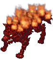

Temple of the Demon God
| This quest or instance is repeatable. | ||
|---|---|---|
| Cooldown | Tickets Available | |
|
Resets at 0:00 |
Solo: 1 | Party: 2 |
Overview
| Requirements | |
|---|---|
| Base Level: | 160 |
| Starting Point: | moro_cav 41/73 |
| Prerequisite(s): | Must have completed Bios Island and Morse Cave |
| Rewards | |
| Experience: | - |
| Items: | Essences of Evil |
Temple of Demon God is the final part of episode 14.3. Here you will find that Satan Morroc has been resurrected as a God! Will you be strong enough to stop him or will he bring upon Ragnarok!?
You will be able to access this instance if you've completed both Bios Island and Morse Cave. It is recommended to bring as much damage dealer as possible as you will need to deal a total of 336 million damage to the MVPs under an hour to complete the instance.
You can re-enter the instance once if you die but you only have 1 hour to complete this instance.
Walkthrough
Walk to the north part of the room close to Ahat where he will notice you. He will now teleport the party to a new room.
Ahat & Shnaim
- Defeat all enemies and a new portal at the top will appear. Enter to proceed with the instance.
- Be aware that some monsters have the element Ghost Lv 3 and that means that your damage needs to be from a different element besides neutral to cause them damage.
Morroc in his kid version will greet you to reach him. Loki and Nidhogg will appear and a brief conversation will roll. After a while a new portal will appear in the left side of the room.
Brinaranea
- In this room you will face Brinaranea and Frost Spiders.
- Most of the skill being used here either water or wind based, and can also freeze you, so having a way to not freeze and some reduction based on those elements is advised to be used when facing.
- OPTIONAL: After killing the MVP, if you're not yet maxed, you can talk with Nidhogg before entering the room and proceed with the rest of the instance. She will give you a reward of 37.5M base exp and 12.5M job exp.
Morroc will once again show his face and after a brief talk a new portal will appear but this time on the right side of the room.
Muspelskoll
- In this room you will face Muspelskoll along with Frenzied Kasas and Salamanders.
- Almost every skill here is fire based so fire reductions are a must. MDEF based gear may help but be careful with the Fire Pillars since they ignore it at 100%.
- To melee damage users: Be careful when you attack since everything besides the MVP can cast Reflect Shield and kill you.
- This room is mostly a gear check. If your damage isn't high enough, you won't be able to out damage the heal spam from the MVP.
- OPTIONAL: After killing the MVP, if you're not yet maxed, you can talk with Nidhogg before entering the room and proceed with the rest of the instance. She will give you a reward of 37.5M base exp and 12.5M job exp.
Morroc will salute your achievement in his glorious adult form but the game hasn't ended. A new portal will appear at the north side of the room where the final fight will start.
Morroc
- The final fight has three stages:
- Morroc in his kid form a.k.a. Demigod until you reach 50% of HP
- Morroc summons Morroc of the Sabbath & Morroc of the Genesis and killing them reduces Demigod's HP to 20%
- Morroc in his adult form a.k.a. Despair God Morroc
- Besides Earthquake, that both Demigod and Despair God Morroc have, the rest doesn't hurt much. Both phases of Morroc are mostly HP sponges.
- Demigod is Holy so physical damage dealers are advised to bring Cursed Waters or ammunition of the same element.
- Despair God Morroc is Shadow so physical damage dealers are advised to bring Holy Elemental Converters, asking for Aspersio, or ammunition of the same element.
If you succeed to kill Despair God Morroc, Nidhogg will appear and give a Squad Prize when you talk to her as a reward for completing the instance.
Enemies
| Image | Name | Level | HP | Size / Race / Element |
|---|---|---|---|---|

|
Gatekeeper Ahat | 149 | 5,000,000 | Large / Angel / Fire 2 |
| Gatekeeper Shnaim | 149 | 5,000,000 | Medium / Demon / Ghost 3 | |

|
Frost Spider | 155 | 155,600 | Medium / Plant / Water 1 |

|
Brinaranea
|
165 | 81,650,000 | Large / Demon / Water 3 |

|
Frenzied Kasa | 155 | 185,000 | Large / Demon / Dark 2 |

|
Frenzied Salamander | 155 | 217,650 | Medium / Demon / Dark 2 |
|  | Muspelskoll
|
165 | 55,620,000 | Large / Demon / Fire 3 |

|
Morroc of the Sabbath | 160 | 1,450,000 | Large / Demon Dark 4 |
|
|
Morroc of the Genesis | 160 | 3,258,000 | Large / Demon / Dark 4 |

|
Demigod
|
175 | 80,000,000 | Small / Demon / Holy 3 |

|
Despair God Morroc
|
175 | 120,000,000 | Medium / Demon / Dark 2 |
Rewards
Essences of Evil work similarly to cards, meaning they can be put in a piece of equipment that has a slot for a card. The Wise Old Woman (Decarder NPC) in Main Office will also treat Essences of Evil like any other cards. Unlike normal cards, Essences of Evil can be put in any piece of equipment.
| Essences of Evil | ||
|---|---|---|
| Item | Name | Effect |
| Essence of Evil STR2 | STR +2. ATK +6. INT -2. | |
| Essence of Evil STR3 | STR +4. ATK +12. INT -4. | |

|
Essence of Evil INT2 | INT +2. MATK +6. STR -2. |
|
|
Essence of Evil INT3 | INT +4. MATK +12. STR -4. |
| Essence of Evil AGI2 | AGI +2. Flee +4. VIT -2. | |
| Essence of Evil AGI3 | AGI +4. Flee +8. VIT -4. | |
| Essence of Evil VIT2 | VIT +2. DEF +6. MDEF +4. AGI -2. | |
| Essence of Evil VIT3 | VIT +4. DEF +12. MDEF +8. AGI -4. | |
| Essence of Evil DEX2 | DEX +2. HIT +4. LUK -2. | |
| Essence of Evil DEX3 | DEX +4. HIT +8. LUK -4. | |

|
Essence of Evil LUK2 | LUK +2. Critical +2. DEX -2. |
|
|
Essence of Evil LUK3 | LUK +4. Critical +4. DEX -4. |
Cards
| Card | Type | Effects |
|---|---|---|
 Demon God's Apostle Ahat Card Demon God's Apostle Ahat Card
|
Accessory Card |
|
 Demon God's Apostle Shnaim Card Demon God's Apostle Shnaim Card
|
Accessory Card |
|
 Brinaranea Card Brinaranea Card
|
Weapon Card |
|
 Muspellskoll Card Muspellskoll Card
|
Shield Card |
|
 Despair God Morocc Card Despair God Morocc Card
|
Footgear Card |
|